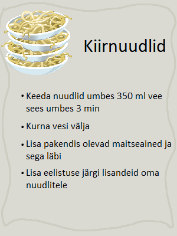
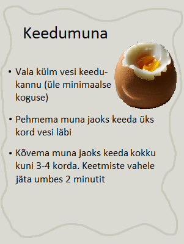
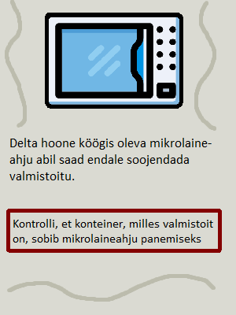

Tegevused delta köögis
Delta hoone köögis saab palju erinevaid sööke endale valmistada. Järgnevalt on toodud mõned lihtsamad näited
Liigu tagasi avalehele
Retseptid
Pildile vajutades saad vaadata erinevaid retsepte


